个人，分
个人，分  张票， 小于 。按刚才设计的抽球方式去分，任何一个人得票的概率是
张票， 小于 。按刚才设计的抽球方式去分，任何一个人得票的概率是 1.1 古典概率——比率
10 个人，共分 3 张音乐会的票。当然无法每人分 3/10 张，一个大家都能接受的公平办法是凭运气。准备一个盒子，里面放 10 个大小和质地一样的球，其中白球 3 个，黑球 7 个。充分扰乱以后，让每个人抽出一个球，凡抽出白球者得票。
能不能抽到白球是由机遇所定的，在动手抽球之前对此毫无把握。用数学的语言，把“抽出白球”这件事称为一个“随机事件”，即其发生与否是随机会而定的事件，又称为偶然事件。
在这个安排中有两点是大家都能同意的：这是一个公平的解决办法；每个人得到票的机会都是 3/10 = 0.3。让我们对此做一点解说。10 个球的大小和质地都一样，在手感上无区别，抽球前经过充分扰乱，保证了没有哪一个球能先天地占据特殊的位置。因此，对第一个抽球的人来说，10 个球中的每一个都有同等可能的机会被抽出，或者说，在抽球之前存在着 10 个“同等可能”的结果，其中有 3 个是有利的结果。这二者的比值（有利结果数∶总的结果数），就是（或者说规定为）“抽出白球”这个随机事件实现机会的大小，称为其“概率”，在数学上记为如下形式。
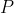
(抽出白球) = 3/10是英文 Probability（概率）的首字母，概率也有“机会的比率”的含义。在较早的著作中也有叫“或然率”的。其实，它不过是白球数所占比率而已。
这个例子自然地推广到一般的情况：假定有 个人，分 张票， 小于 。按刚才设计的抽球方式去分，任何一个人得票的概率是
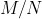
。再抽象一步，设想一个试验（抽球可看作一个试验）有 个“同等可能”的结果，其中有 个结果是使（或说有利于）某事件  发生，那么就把事件 的概率规定为 。这个规定是大家都能同意的，因为，如果要想把此处涉及的机遇加以数量化，则除了用 这个数外，再也想不出有其他更合理的做法。不足的是，这个规定不是对一切情况都适用，因为它有两个前提条件：可能结果的总数为有限个；每个结果的出现有同等可能。后一个条件尤其重要，有的试验在理论上讲可以有无限个结果，但经过某种处置，可以近似地转化成有限个结果的情况。但是，“同等可能”这个条件一般都难于满足，这就大大限制了这个规定概率的方法所能应用的范围。
发生，那么就把事件 的概率规定为 。这个规定是大家都能同意的，因为，如果要想把此处涉及的机遇加以数量化，则除了用 这个数外，再也想不出有其他更合理的做法。不足的是，这个规定不是对一切情况都适用，因为它有两个前提条件：可能结果的总数为有限个；每个结果的出现有同等可能。后一个条件尤其重要，有的试验在理论上讲可以有无限个结果，但经过某种处置，可以近似地转化成有限个结果的情况。但是，“同等可能”这个条件一般都难于满足，这就大大限制了这个规定概率的方法所能应用的范围。说实话，一项试验的全部结果是否有等可能性，是无法确切证明的。这个概念本身就不具备一种可供证明（或证伪）的清晰的含义，它更多是从感觉上去理解 1。在抽球的试验中，盒中的球事先经过充分长时间的扰乱，时间长到我们感觉到哪一个球都有同等机会处在某个位置，在这个感觉的基础上我们接受“同等可能”的说法。在打麻将、玩扑克时，每局开始前要仔细洗牌，使局中人感觉到，他拿到哪一手牌都有同等的机会。而这个感觉所根据的理由是：牌经过如此仔细洗了以后，能保证每一张牌都有同等机会处在任何一个位置上。在有些问题中，感觉没有提示这种可能性。例如投资一个项目，有两个可能的结果：盈利和蚀本。当决定做这一投资时，当事人一般总是感到盈利的可能性大些，不然他不会做这项投资。因此这里不存在等可能性，也就无法利用上述公式去计算他将会盈利的概率。说等可能性是一种感觉，并非忽视其实际背景，这种实际背景在客观上有理由使我们感觉或认可等可能性的存在，但无法在理论上确证它。
1有趣的是，也有学者从理论上探讨这个问题。例如，美国统计学家戴柯尼斯在 1998 年世界数学家大会上的报告中说，他的研究证明，为把一副有 52 张的扑克牌洗透，用通常的洗牌法，得洗 7 遍才够。
“盒中抽球”这个试验，简单且容易理解，常用来作为实际问题的模型，有重要的认识和应用的意义。比如电视台预报“明天的降水概率为 0.2”，这话的意思不大好理解，或者说，不易使人产生一种形象化的感受。实际上这句话的意思无非是：明天降水的机会，与从一个抽球试验中抽出白球的机会一样，只是在该试验中有 10 个球而白球有 2 个。这个讲法可能容易被更多的人所理解，其不足之处也在过于简单。为说明这一点，让我们回到 10 个人分 3 张音乐会票的那个问题。我们用盒中抽球的模型（盒中 10 个球，3 白 7 黑）来处理这个问题。但抽球的次序有先后，这个次序的先后会不会对抽到白球的概率产生影响？如果会，则这个安排就是非公平的。虽然人们在直觉上都认为这次序无关紧要，但按照这抽球模型的操作，道理可不易说清楚。第一个抽球的人，其抽到白球的机会是 0.3，这一点没有异议。到第二个人抽球时，盒中只剩 9 个球，并且其构成与第一个人抽的结果有关。要讲清他抽得白球的机会仍是 0.3，就得费一把劲，且愈是后抽的人情况愈复杂。
下面我们要介绍一种办法，它能够在更多和更复杂的情况下，体现出“同等可能”这个要求，这就是排列和组合。它们的区别是：排列要讲究次序，而组合则不需要。举例来说明，有 4 个相异的物件，分别用 、 、、
、、 来记。从这 4 个物件中取出 2 个来排列，不同的做法有：
来记。从这 4 个物件中取出 2 个来排列，不同的做法有：
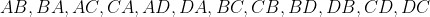
，共计 12 种。若是取出 2 个来组合，则不同的做法只有
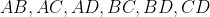
这 6 种。原因在于要计算次序， 和
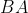
要算是不同的排列，但它们是同一个组合，因为它们都由物件 和物件 组成。举一个形象的例子：某个中学要从 4 位教员中挑选 2 位，分别担任校长和副校长，则挑选的方法有 12 种，因为此处次序很重要。相反，若从 4 位乒乓球运动员中挑选 2 位参加双打，则挑选方法只有 6 种，因为在此次序没有意义。一般而言，有  个相异的物件，从其中取出
个相异的物件，从其中取出  个进行排列，不同的做法有多少种？用
个进行排列，不同的做法有多少种？用
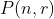
记这个数目，公式为：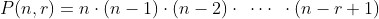
， （1）即把从
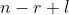
开始到 为止的 个整数连乘。当 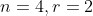
时，就是刚才讨论过的例子。利用公式（1），因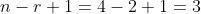
，得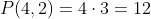
，与前面给出的结果相符合。注意，在此处及以后，乘号常用一个点简记：4·3 是指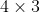
。当然，点也用来记小数，这从文义不难分清。公式（1）的证明不难。它利用下述的一般原则：如果办一件事要依次序经过 个环节，而完成第 1 个环节有  种不同的方法，完成第 2 个环节有
种不同的方法，完成第 2 个环节有  种不同的方法，以此类推，直到完成第 个环节有
种不同的方法，以此类推，直到完成第 个环节有  种不同的方法，则办成这件事的不同方法总共有
种不同的方法，则办成这件事的不同方法总共有
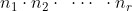
种。这里的理解是：哪怕在一个环节上做法不同，就算不同的方法。例如，由甲地到丙地途中经过乙地。由甲到乙有 5 条路可走，而由乙到丙有 3 条路可走，则由甲至丙不同的走法有 5·3 = 15 种。我们把上述一般原则用于 的计算问题。先把“从 个物件中取 个去排列”这件事分解成 个环节去办。设物件自左至右排列。先从 个物件中取 1 个排在最左边，不同的做法有 种。次一环节是从剩下的  个物件中，取 1 个排在（自左数起）第 2位。因只剩下 个物件，完成这一环节的不同做法只有 种。下面再依次取排在第 3 位、第 4 位……第 位的物件，方法分别有
个物件中，取 1 个排在（自左数起）第 2位。因只剩下 个物件，完成这一环节的不同做法只有 种。下面再依次取排在第 3 位、第 4 位……第 位的物件，方法分别有
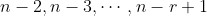
种。因而不同排法的总数，按上述一般原则，应是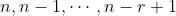
这 个数连乘。一个重要的情况是
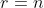
。这时依照公式（1），有：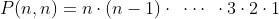
，即最初 个正整数连乘，其结果称为 的“阶乘”，记为
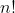
。例如，5! = 1·2·3·4·5 = 120。 是把 个相异物件按任意次序排列时，所能排出的不同样式的总数。得出了排列数 的公式，组合数的公式就不难推出了。从 个相异物件中取 个组合，其不同做法的总数
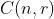
的公式如下。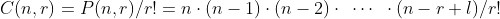
（2）道理很简单。每一个由 个物件构成的组合，都可以将这 个物件任意排列，其数目如刚才论证的为
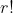
。因此，排列数 应为组合数 的 倍。所以，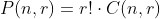
，即公式（2）。例如，从 5 个相异物件 、、、、
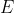
中取 3 个组合，按公式（2），不同的做法有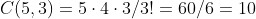
种。这里我们也不难逐一举出组合的结果。
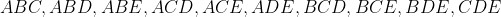
这与用公式（2）算出的结果相符。
用排列（或组合）的安排去体现等可能性的要求，就是把总数为 的各种排列（或总数为 的各种组合）看成是等可能的。我们用“随意取”这 3 个字来表达这个意思，在实际操作上要体现出这种随意性即等可能性，需做一番布置。例如 5 双大小各不相同的鞋共 10 只，要随意取出 4 只加以排列，可以这样做：在一盒中放 10 个大小和质地一样的球，上面分别书写数字 1, 2,…, 10，同时把 10 只鞋也编号为 1 至 10，把盒中的球充分扰乱后，让一个人依次从中取出 4 个以排成一列，然后把取出的 4 个球换成与其数字相同的鞋。在球“充分扰乱”的前提下，我们认可：所有可能的
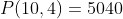
种排列有等可能性，即其中每一个排列有相同的机会 (1/5040) 出现。下面举几个实例说明排列组合方法在概率计算中的应用。先看那个 10 人分 3 张音乐会票的问题。我们曾讲到，用“抽球模型”的困难，在于不明确其机会是否与抽的次序有关，即怎样去证明，不论你排在第几位去抽，你得票的机会总是 3/10。采用排列的方法，这一点容易看清楚：10 个人依次随机抽出一球，在效果上等同于把这 10 个球随意排成一列，每种排法有等可能性。因此，把这 10 个球自 1 至 10 编上号，不妨把 3 个白球编成 1 号、2 号和 3号（把球编号的目的是使 10 个球成为相异的，以适应前面“ 个相异物件”的提法）。再把 10 个人也自 1 至 10 编上号。把 10 个球自左至右随意排成一列，让 1 号人取最左边的球，2 号人取次左的球，以此类推，在这一安排下，10 个人的地位完全是对等的（在抽球安排中，每人轮到时盒中剩下的球数不同，故表面上看各人似乎不对等），因而有一样的机会拿到白球，即 3/10。这一点不难通过计算证明。以编号是 4 的人为例（他要拿自左数起第 4 个球）。10 个球任意排列，排法的总数，为
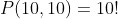
。这是这个“试验”的可能结果总数。为使“编号为 4 的人拿到白球”这一事件实现，其有利排列方法数目可计算如下。首先，自左数起第 4 位应放一个白球，即 1、2、3 号球中之一，其不同的做法有 3 种。这步做了以后，剩余的 9 个球可在剩余的 9 个位置任意排列（而不影响编号为 4 的人取得白球），其做法共有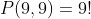
种。这样，有利于“4 号人拿白球”这事件实现的排列总数为 3·9!，而其概率为 3·9!/10! = 3/10。再看一个例子。有 4 双大小不一的鞋共 8 只，现随意把它们分成 4 堆，每堆 2 只，问“每堆都恰成一双”这一事件 的概率有多大。“随意分成 4 堆，每堆 2 只”的意思是，把 8 只鞋分成 4 堆，每堆 2 只的方法（即不同的分法）有许多，而做法要保证每一种可能的分法都有同等机会出现。你可以想出很多模型（其每一种都使人们认可其同等机会性）来实现这一点。最简单的是下面的安排：把 8 只鞋随意排成一列，取最左的 2 只为一堆，次左的 2 只为一堆，以此类推。排列的等可能性保证了分堆的等可能性。把 8 只鞋随意排成一列的方法，有
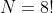
种。有利于事件（每堆成双）实现的排列总数可计算如下。左 1 位可自 8 只中任选一只，方法有 8 种。取定后，左 2 位必须与之配对，故只有 1 种取法。这两位定下后，左 3 位可在余下的 6 只中任取 1 只，方法有 6 种。取定后，左 4 位只有 1 种取法，以此类推，左 5、6、7、8 位依次有 4、1、2、1 种取法。故有利于事件 实现的排列数为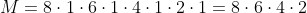
按公式  ，可如下计算。
，可如下计算。
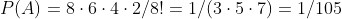
最后看一个组合的例子。仍是 4 双大小不一的鞋共 8 只，把它们随意分成两堆，每堆 4 只。问：“每堆恰好是 2 双”这个事件 的概率。
“分 2 堆，各 4 只”可以这样来实现。从 8 只鞋中随意取出 4 只成一堆（不计次序，是组合），剩下 4 只自成一堆。为了实现事件 ，只要取出的那一堆恰成 2 双就行。从 8 只鞋中取 4 只（组合）的做法，总数为
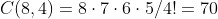
。有利于事件 实现的取法可如下计算。先把各双鞋分别用绳子捆在一起各成一堆，共 4 堆，然后在这 4 堆中取出 2 堆，取法有 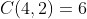
种。故事件 的概率 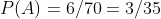
。这个题也可以用排列去做，但计算上要麻烦得多，主要是在计算有利于事件 的排列上。以上这两个题若用抽球模型去做就不好办。
基于试验结果的等可能性，用公式
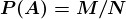
规定的概率，叫作“古典概率”。这是唯一的一种情况，使事件概率能通过简单明了的方式去定义，并给出了简单可行的算法。“古典”一词，表明这一定义的起源古老。概率论是研究概率计算及与之相关的问题的学科，在概率论的萌芽期，研究的对象全限于古典概率。古典概率最先由何人在何时提出，文献中无明确记载，可以肯定的是它起源于（用骰子为工具的）赌博。古典概率的概念在赌博活动中形成，乃是一种集体智慧。其中，16 世纪的意大利数学家和“赌博家”卡尔达诺（1501—1576）起了重要作用。骰子是一个均匀的正六面体，各面分别标示点数 1 至 6。由于质地均匀及其正方体形状，骰子在投掷时，或放在封闭容器内充分摇晃后，可以认为出现哪一个点（该面朝上）有同等可能性，即 1/6，这成为赌博公平性的基础。从 14 世纪以来，使用骰子作赌具在欧洲已蔚成风气，到后来才被扑克等所取代。骰子赌博的活动孕育出有关概率的一些最初的概念，其原因在于：（1）在赌博中机遇的作用特别明显，参加者出乎对自己胜负的关心，自然要注意到各种可能情况出现机遇大小的计算问题；（2）赌博是一种在同样条件下可以多次重复的活动，这有利于积累经验并与理论上的计算做比较；（3）骰子赌博中出现的情况不太复杂，有关的概率计算，在人们当时掌握的数学知识水平上能对付得了（扑克就复杂得多，所以以它为工具的赌博未能在早期概率论的发展中起多少作用）。它又不是过于简单，使一些概念能从中取得发展空间。骰子赌博在概率论发展中所起的作用，还可以从下述事实看出。直到 18 世纪前期，一些概率论大学者，如惠更斯、伯努利等人的有重要影响的概率论名著中，相当大一部分内容是讨论骰子赌博中的机遇计算问题。
回过头来说说卡尔达诺。他是意大利米兰一位律师的私生子，青年时选择的专业是医学。得力于其父是一位兼职数学教师，他还兼习数学。由于他沉溺于赌博以及其出身背景，求职不顺利的他，最后只好当了一名数学教师。但与一般赌徒不同的是，他参加赌博活动有一种理性的成分和出于研究的爱好。1564 年，他写了一本名为《机遇博弈》的著作（机遇博弈是指其胜负纯凭机遇的博弈，如掷骰子，与下围棋这类涉及技巧的博弈不同），但这部著作到他死后 87 年的 1663 年，才得以发表。他在书中认为，赌博是一种社会病，像生理上的疾病一样，有理由作为研究的对象。
这是概率史中最早的一本成书的著作，在历史上有重要地位，迟至 1961 年还出版了其英译本。他在书中提出了“诚实的骰子”的概念，指的是在投掷骰子时，其 6 面都有同等的机会出现。这是第一次在一个特例中明确提出“同等可能”这个概念，但他没有将其推广到一般的情况。不过，作为教学的目的，他提出了所谓“3面骰子”及 4 面、5 面骰子的概念，这可以解释为他把等可能概念由 6 推广到 3、4、5。更重要的是，他引入了参赌者的“胜率”这个概念：设赌局有  个等可能的结果，其中
个等可能的结果，其中  个结果使某赌徒得胜，余下
个结果使某赌徒得胜，余下
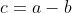
个结果使他输掉，则定义他的胜率为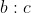
或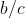
。按前述，我们定义该赌徒得胜的概率为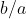
。可以看出，概率与胜率的关系是：概率 = 胜率 /（1 + 胜率）。因此，他的这个提法，从实质上说，已达到了古典概率的定义的程度，可惜他没有明确提出来。不过，“胜率”这个概念一直沿用至今。因为赌博时一般使用多个骰子，所以卡尔达诺把一个骰子 6 面的等可能性，推广到了多个骰子的情形。用他的话说就是，“几个诚实的骰子联合起来仍是诚实的”。以两个骰子为例，将其编号为 1 和 2，则投掷时有 6·6 = 36 种可能结果。
11, 12,…16, 21, 22,…26,…, 61, 62,…, 66
其中，例如“42”这个结果表示第一个骰子掷出 4 而第二个骰子掷出 2。卡尔达诺的意思是，如果两个骰子都是“诚实的”，那么以上所列的 36 个结果就具有等可能性。这个论断可类推到任意个骰子的情形。有了这个，就可以计算在多个骰子的赌局中，某种情况出现的机会有多大。让我们举一个现实生活中的例子。
若干年前，街上曾有过一种赌博的地摊。摊主让顾客投掷 3 个骰子，胜负的规则是：若顾客掷出 3 个骰子点数之和为
3, 4, 5, 6, 7, 14, 15, 16, 17, 18
这些数中之一时，顾客胜；若掷出点数和为其他数，即 8, 9, 10, 11, 12, 13 时，摊主胜。一时之间，上钩者不在少数。究其心理，大概是基于以下的考虑：掷 3 个骰子得到的点数和有 3, 4, 5,…, 16, 17, 18 等 16 种可能情况，而按规则顾客胜的有 10 种，这显得较为有利。实践结果多是摊主胜。其原委不难看出，关键在于这 16 个可能结果并无等可能性。把投掷 3 个骰子的总共 6·6·6 = 216 种结果，按字典序列如下排列。
111, 112,…, 116,…, 661, 662,…, 666
按卡尔达诺的上述原则，这些结果有等可能性。但是，如果逐一检查这 216 个结果，那么就会发现，例如，其和为 3 的结果只有 1 个，而和为 10 的结果则有 27 个。因此，掷出和为 10 的机会，是掷出和为 3 的机会的 27 倍，二者远非等可能的。逐一检查还会发现，使顾客获胜的结果数只有 69，而摊主获胜的结果数有 147，情况远远有利于摊主。类似的骗局以不同的形式出现过，行骗的对象，就是那些对机遇大小缺乏数量概念，而易于被某些表面现象迷惑的人。